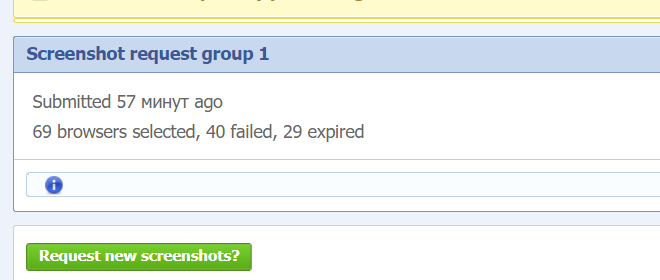
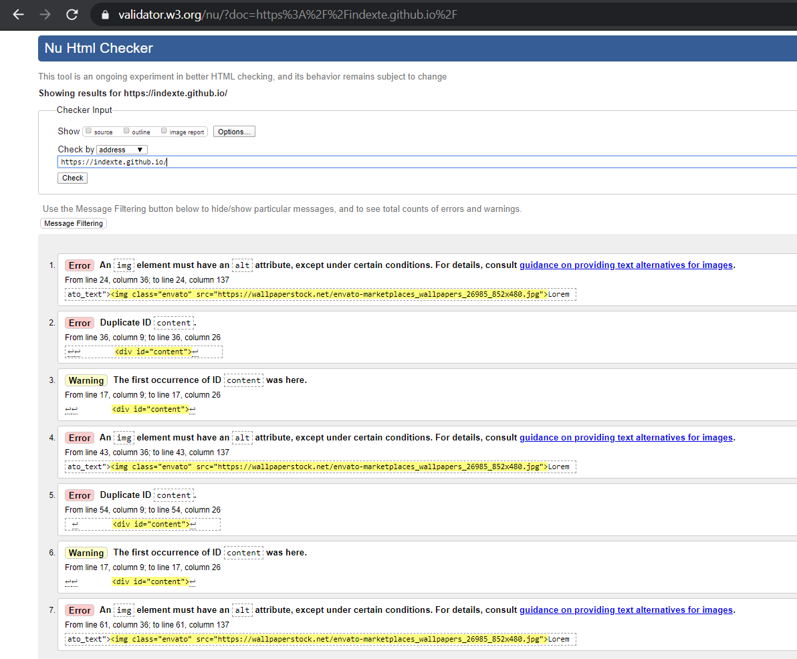

-
Пример 1
Пример 1
- Пример 2
- Доля рынка браузеров для разных регионов
Европа
Северная Америка
Азия
-
С ресурса browsershots.org скриншоты взять не удалось так как:

Аналогичные сервисы либо платные либо требуют почту с доменом компании ¯\_(ツ)_/¯, поэтому попробовал самостоятельно проверить свой проект в различных браузерах
Google Chrome 80
Mozilla Firefox 75.0

Opera 66
- Сброс стилей в действии на примере Лекции 5
Наблюдаем, что браузер сам выставил отступ от края окна
Применяем сброс margin и padding для body
Теперь footer вплотную прилегает к краям окна

- Проверяем проект с семинара 4 валидаторами
validator.w3.org
Получаем 2 предупреждения, 5 ошибок, 3 из них возникли из-за отсутствия атрибута alt в теге img
Исправляемся
Проверяем обновленный проект с помощью других валидаторов
wave.webaim.org
jigsaw.w3.org